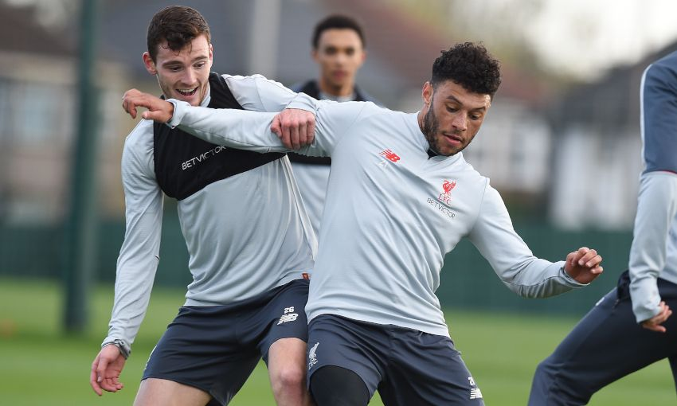
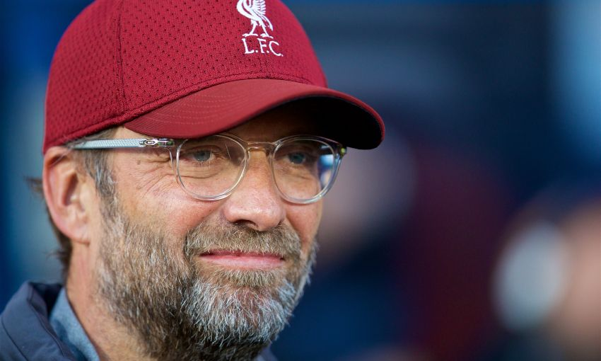
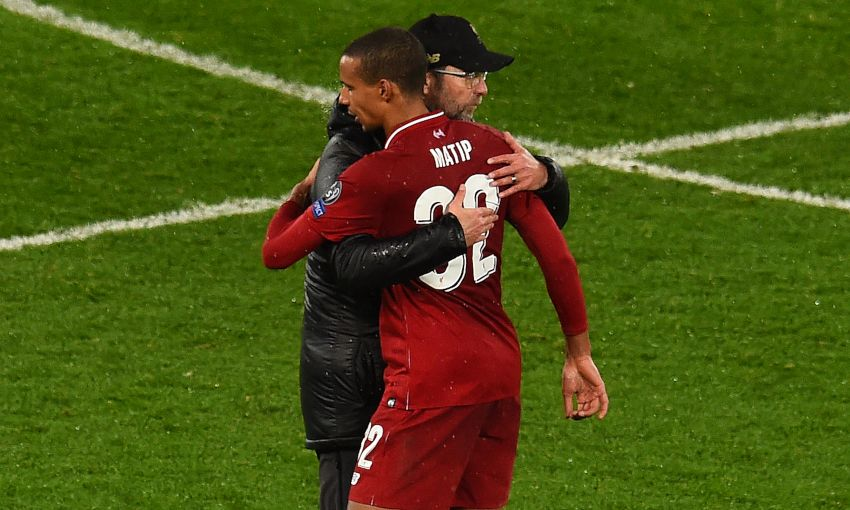
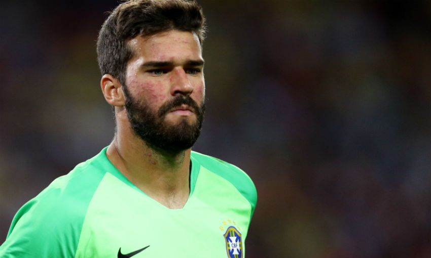
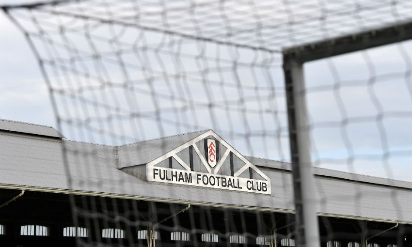
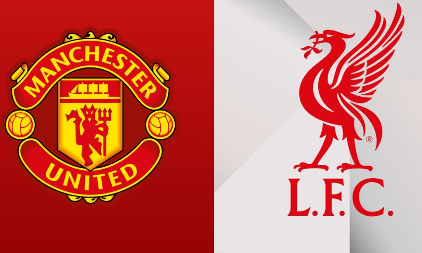
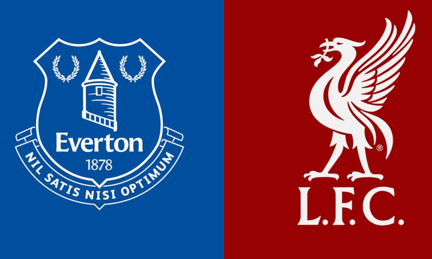
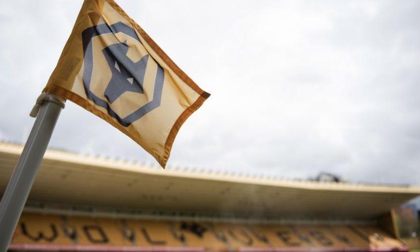
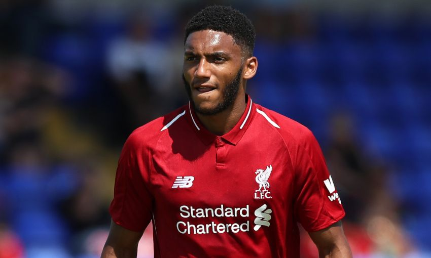

-
-
-
 Origi on shining his light, wide role and being
'fuelled' for Everton
Origi on shining his light, wide role and being
'fuelled' for Everton
 Roberto Firmino injury latest
Roberto Firmino injury latest
 Mane humbled by Klopp's 'world-class' description
Mane humbled by Klopp's 'world-class' description
- Melwood gallery: Liverpool set sights on Merseyside derby
- Klopp on Mane's class, squad rotation and the Merseyside derby
- Joel Matip praised for 'very impressive' form
 Klopp: Trent was awarded match ball for hat-trick of
assists
Klopp: Trent was awarded match ball for hat-trick of
assists
 Roberto Firmino fitness update
Roberto Firmino fitness update
-  Three Reds named in Brazil squad
- Journalist Sam Williams
 More NewsRobertson: We'll fight for the title until the end
More NewsRobertson: We'll fight for the title until the end
Sunday’s goalless draw with Everton at Goodison Park means the Reds sit one point behind table-topping Manchester City with nine games still to play.
Following the 233rd Merseyside derby, Jürgen Klopp stated that his team remain very much ‘in the battle, in the fight’ - a sentiment Robertson agrees with.
“Of course, we’re only a point behind City,” the left-back told Liverpoolfc.com, when asked if staying positive is vital.
“There’s still only a game twist if they drop points, so we’re there to capitalise on that [and] that’s what we’ve got to do. They’ve been good at closing the gap on us and have taken over from us. They’ve been good at piling on the pressure, but now we do that to them and hopefully they feel it because we will push them the whole way.
“We’ll push right to the final whistle and kick against Wolves in the last game of the season. If we fall short, we fall short, if we don’t then great. “But we’ll fight for everything now and we’ll push them the whole way. If they drop points then we need to be in a position to capitalise on that like they’ve done to us.”Liverpool enjoyed the best of the chances in a tight match that was played out amid a highly-charged atmosphere across Stanley Park, and Robertson was left to rue those spurned opportunities.
“[It was] frustrating in front of goal but other than that, you know what derbies are like and how they’re going to be with tackles and up for the fight,” he reflected.
“We knew they would try to come out and maybe leave a bit on us and get the crowd behind them and they did. But we matched that and we just didn’t take the chances that we were given. In derbies when it’s tight, they’re the chances you need to take and unfortunately we didn’t. But when that doesn’t happen it’s important you don’t concede and come away with nothing.
“The last 10 or 15 minutes it did open up and that’s where you need to go for it, which we did. But you also need to be wary of course, because if we had come away with nothing it would have been gutting for us because we didn’t deserve that.
“So we needed to go for the win but we needed to be switched on, which we were. They never had a lot of chances, maybe half-chances but not real clear-cut ones. We had a few and we’ve just got to be more clinical really.
“The last pass and the shots were a wee bit off but we work on it, get ready for Burnley and hopefully get the three points and take it from there. We’ve still got a long way to go and the dynamic changes now because we become the chasers.
“So now we just need to keep pressure on City the whole way.”
-
 U23s v Everton at Anfield: Ticket details
U23s v Everton at Anfield: Ticket details
- Fulham v Liverpool: Away ticket details
- Manchester United v Liverpool: Ticket update
 Liverpool v Bayern Munich: Sold out
Liverpool v Bayern Munich: Sold out
 Bayern Munich v Liverpool: Ticket selling details
Bayern Munich v Liverpool: Ticket selling details
 Watch Kaka, Pirlo, Maldini and more play at Anfield
Watch Kaka, Pirlo, Maldini and more play at Anfield
- Everton v Liverpool: Away ticket details
- Wolves v Liverpool: FA Cup ticket details
- Manchester City v Liverpool: Away ticket details
- LFC
 More NewsTicket details: Bayern v Liverpool screening at Anfield
More NewsTicket details: Bayern v Liverpool screening at Anfield
Turnstiles will open at 6.30pm for the 8pm kick-off on Wednesday March 13. Ticket prices Tickets will be available on the Kop for this all-ticket event with tickets priced as follows.
Adults - £10 Juniors (16 and under) - £5 (within the advertised family sections*)
The ratio for adult/junior tickets is 2:1. *Family sections will be advertised here.
Ticket sales Disabled supporters - click here for details.
All other supporters - the below sales will take place online only. Supporters who were eligible to purchase a ticket for the Bayern Munich away game but were unsuccessful: from 11am on Thursday February 21 until 9.30am on Friday February 22.
Supporters are guaranteed a ticket during the above sale and can purchase one ticket per person, up to a maximum of four tickets per transaction. General sale: from 10am on Friday February 22 until 5pm on Tuesday March 12 (subject to availability).
Tickets will be available on a first come, first served basis during the above sale, and supporters can purchase four tickets per person up to a maximum of four tickets per transaction. Bar-coded paper tickets will be provided for all supporters attending and must be used to gain access into the stadium. Liverpool FC season ticket and Member access cards will not be activated.
Once ticket sales end at 5pm on Tuesday March 12, the club will not be able to accommodate any further sales. Any tickets held for collection must be collected by 7.30pm on Wednesday March 13. Only supporters in possession of a ticket should travel to Anfield.
-
 Liverpool eye up move for Monaco youngster
Liverpool eye up move for Monaco youngster
- Klopp confirms Liverpool interest in England youngster
- Joao Felix claims made amid Liverpool rumours
 Matthijs de Ligt urged to join Liverpool
Matthijs de Ligt urged to join Liverpool
 Liverpool plot Leeds transfer raid
Liverpool plot Leeds transfer raid
 Liverpool to hijack move for Adrien Rabiot
Liverpool to hijack move for Adrien Rabiot
- Lorenzo Insigne 'subject of Liverpool transfer bid'
 Liverpool 'make £61m offer' for Napoli forward Lorenzo
Insigne
Liverpool 'make £61m offer' for Napoli forward Lorenzo
Insigne
- Liverpool target Demirbay is 'complete midfielder'd
- Source Daily Mirror
Daily Mirror → MMore NewsBarcelona hand Liverpool boost in Rabiot race
According to reports in Spain, the Catalan club are 'tired of waiting' for an answer after contacting the 23-year-old's representatives. Rabiot's contract at Paris Saint-Germain is set to expire at the end of the season, and he has told the Ligue 1 champions that he won't sign an extension.
Barca had reportedly offered a 10 million Euro signing on fee - the equivalent of £8.7 million - and the same sum as an annual salary.
But now they have decided to look elsewhere after the Frenchman's camp failed to get back to them, SportWitness reports.
Liverpool are said to be circling, but football.london says many expect him to link up with his former manager, Unai Emery at Arsenal.
He has made 14 appearances for PSG this year, but has been left out of the side since December after announcing his intention to leave.
Rabiot has played 240 times for the French club, finding the net 25 times in all competitions.
-
-
- Robertson: We'll fight for the title until the end Liverpool will adapt to the shift in the dynamic of the title race and push until the very final moment of the season to win the Premier League, Andy Robertson has pledged.
-
3 MAR Origi on shining his light, wide role and being 'fuelled' for Everton
-
3 MAR Roberto Firmino injury latest
-
2 MAR Mane humbled by Klopp's 'world-class' description
-
1 MARMelwood gallery: Liverpool set sights on Merseyside derby
-
28 FUBKlopp on Mane's class, squad rotation and the Merseyside derby
-
28 FUBJoel Matip praised for 'very impressive' form
-
26 FUB Klopp: Trent was awarded match ball for hat-trick of assists
-
25 FUB Roberto Firmino fitness update
-
25 FUBThree Reds named in Brazil squad
-
25 FUB
 Match report: Brilliant Reds put five past Watford
Match report: Brilliant Reds put five past Watford -
25 FUB
 Jordan Henderson: Our mentality is 'bring it on!'
Jordan Henderson: Our mentality is 'bring it on!' -
25 FUBInjury updates: Gomez, Oxlade-Chamberlain and Brewster
-
-
- Ticket details: Bayern v Liverpool screening at Anfield Liverpool FC has released the following ticket details for the live Anfield screening of the Champions League last-16 second leg against Bayern Munich.
-
3 MAR U23s v Everton at Anfield: Ticket details
-
2 MARFulham v Liverpool: Away ticket details
-
1 MARManchester United v Liverpool: Ticket update
-
28 FUB Liverpool v Bayern Munich: Sold out
-
27 FUB Bayern Munich v Liverpool: Ticket selling details
-
27 FUB Watch Kaka, Pirlo, Maldini and more play at Anfield
-
26 FUBEverton v Liverpool: Away ticket details
-
26 FUBWolves v Liverpool: FA Cup ticket details
-
25 FUBManchester City v Liverpool: Away ticket details
-
- Barcelona hand Liverpool boost in Rabiot race Liverpool and Arsenal's efforts to sign highly-rated midfielder Adrien Rabiot appear to have been given a boost after Barcelona cooled their interest.
-
3 MAR Liverpool eye up move for Monaco youngster
-
3 MARKlopp confirms Liverpool interest in England youngster
-
2 MARJoao Felix claims made amid Liverpool rumours
-
1 MAR Matthijs de Ligt urged to join Liverpool
-
1 MAR Liverpool plot Leeds transfer raid28 FUB Liverpool to hijack move for Adrien Rabiot28 FUBLorenzo Insigne 'subject of Liverpool transfer bid'27 FUB Liverpool 'make £61m offer' for Napoli forward Lorenzo Insigne26 FUBLiverpool target Demirbay is 'complete midfielder'
-
-